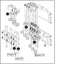
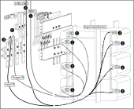
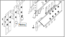

Route the bypass cables through the top or bottom of the
I/O section of the UPS cabinet and connect the bypass cables to the
bypass busbars (L1, L2, L3, N) and to the ground busbar.
For 3-wire input system: Route the input cables through
the top or bottom of the I/O section of the UPS cabinet and connect
the input cables to the input busbars (L1, L2, L3) and to the ground
busbar.
For 4-wire input system: Route the input cables through
the top or bottom of the I/O section of the UPS cabinet and connect
the input cables to the input busbars (L1, L2, L3, N) and to the ground
busbar.
Route the output cables through the top or bottom of the
I/O section of the UPS cabinet and connect the output cables to the
output busbars (L1, L2, L3, N) and to the ground busbar.
Figure 1. Front View of the Busbars in the I/O Section of the UPS Cabinet

Route the preinstalled cables labelled UIB LOAD through the right side into the
transformer cabinet and connect to the busbars (input N to H0, L1
to H1, L2 to H2, L3 to H3) on the input transformer.
Route the preinstalled cables labelled W001 through the right side into the transformer
cabinet and connect to the busbars (output N to X0, L1 to X1, L2 to
X2, L3 to X3) on the input transformer.
Figure 2. Front View of the Busbars in the I/O Section of the UPS Cabinet
and Transformer Cabinet

Route the preinstalled cables labelled BIB LOAD through the right side into the
transformer cabinet and connect to the busbars (bypass N to H0, L1
to H1, L2 to H2, L3 to H3) on the bypass transformer.
Route the preinstalled cables labelled SSIB LINE through the right side into the
transformer cabinet and connect to the busbars (output N to X0, L1
to X1, L2 to X2, L3 to X3) on the bypass transformer.
Figure 3. Front View of the Busbars in the I/O Section of the UPS Cabinet
and Transformer Cabinet
Only in systems with remote battery cabinet(s):
Route the battery cables through the top or bottom of the I/O section
of the UPS cabinet and connect the battery cables to the battery busbars
(+, –) and to the ground busbar.
Note: The battery busbars in the I/O section of the UPS cabinet
are only for remote battery cabinets.
Figure 4. Front View of the Busbars in the I/O Section of the UPS Cabinet

Only in systems with adjacent battery cabinet(s): Route the battery cables through the left side panel and connect
them to the battery busbars (+, –) and the ground busbar in
the power section of the UPS cabinet.
Note: The battery busbars in the power section of the UPS
cabinet are only for adjacent battery cabinets.